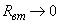
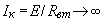

Источник электрического напряжения (ИН) - это источник электрической энергии, характеризующийся электродвижущей силой Е и внутренним электрическим сопротивлением Rвт. Принцип работы независимого источника напряжения рассмотрим на примере простейшей цепи, состоящей из ИН с ЭДС Е и резистивного элемента-приемника с переменным сопротивлением R (сопротивлением проводов пренебрегаем) (рис. 1.10). На схеме замещения цепи источник напряжения представлен в виде двух элементов: идеального ИН с ЭДС Е , внутреннее сопротивление которого равно нулю, и последовательно соединенного с ним резистора, сопротивление которого Rвт. Электродвижущая сила Е численно равна разности потенциалов или напряжению U12X между положительным 1 и отрицательным 2 выводами источника энергии при отсутствии в нем тока ( I = 0), т. е. в режиме холостого хода (ХХ),
Рис. 1.10 Зависимость между электрическим напряжением на выводах источника электрической энергии и электрическим током носит название внешней характеристики источника, т. е. U12 = f (I). Согласно (1.19) при увеличении тока от нуля до номинального значения I = Iн напряжение на выводах источника ЭДС убывает практически по линейному закону (кривая 2 , рис. 1.10, б). При дальнейшем увеличении тока (при уменьшении сопротивления R ) эта пропорциональность нарушается (кривая 1 на рис. 1.10, б), т. к. при этом величина ЭДС Е у некоторых источников уменьшается и возрастает значение внутреннего сопротивления Rвт . При идеализации источника напряжения ( Е = const , R вт = const при любом значении тока I ) внешняя характеристика ИН U12 = f ( I ) будет линейной (линия 2 , рис. 1.10, б ) и ток короткого замыкания (при R = 0 и U12 = 0) стремится к значению Iк = E/Rвт . Такой режим работы источника является аварийным и недопустимым вследствие значительного возрастания тока (в десятки раз по сравнению с расчётным номинальным током источника), т. к. внутреннее сопротивление Rвт ИН обычно мало. Если сопротивление Rвт << R и напряжение Uвт << U12 , т. е. источник напряжения работает в режиме, близком к режиму ХХ ( E @ U12 ), то такой источник называют идеальным источником напряжения с внешней характеристикой U12 = Е - прямой , параллельной оси абсцисс (линия 3 , рис. 1.10, б). Заметим, что для идеального ИН режим короткого замыкания (КЗ) исключается, т. к. при , . Напряжение на сопротивлении R приёмника
При дальнейшем изложении тем дисциплины (если не оговорено) будут рассматриваться ИН с характеристикой 2 или 3 (рис. 1.10, б). В зависимых ИН (рис. 1.11, а) предусматривают две пары выводов: пару управляющих 1-1' и пару собственно ИН 2-2'. Условное графическое обозначение идеального зависимого ИН представлено на рис. 1.11, б. Если ЭДС Eз = kuу, то имеем источник напряжения, управляемый напряжением (ИНУН), а если Eз = kiу, то имеем источник напряжения, управляемый током (ИНУТ). Рис. 1.11 Внешние характеристики идеального (кривые 1) и реального (кривые 2) зависимого ИН с ЭДС Eз = kuу изображены на рис. 1.11, в. |
|||||||